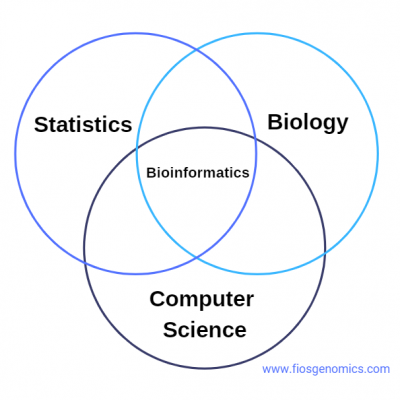

About Me
I'm passionate about building systems that are reliable, scalable, and actually work in the real world. I enjoy solving problems that involve networking, distributed systems, and data structures especially when there’s some challenge to figure out. Lately, I’ve been working on building a peer-to-peer file-sharing system using consistent hashing, sockets, and multi-threading in Python. It handles faults, replicates files, and keeps things running even when nodes drop out a project that taught me a lot about system design and how all the moving parts need to work together.
I’ve also worked with C++ and Python on different data structures and used MATLAB for algorithmic work in areas like bioinformatics !! I try to take a clear, methodical approach to whatever I build, whether it's for class, a side project, or something more experimental.
Outside of code, I’m interested in how tech connects with other areas like art, ethics, and social impact. I believe good technology should be thoughtful, not just clever.>
Right now, I’m looking to connect with others who care about building smart, useful systems whether you're working on distributed computing, AI tools, or just cool projects that make people’s lives easier. Let’s reach out
